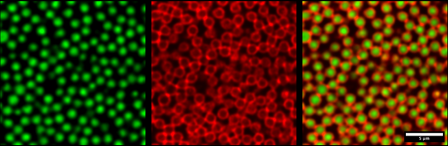

ESPCI Paris June 18-20 2024

Soft amorphous solids are important as practical materials, and they also continue to challenge our fundamental physical understanding. For example, the interactions among individual colloidal particles may be well-characterised, but it is very challenging to predict the properties of the glassy or gel-like materials that form when these particles are dispersed in a solvent. This challenge is especially apparent if the systems are far-from-equilibrium. This meeting brings together recent advances from expeirment, simulation and theory.
Invited Speakers
Abraham Mauleon Amieva (Bristol), Paul Bartlett (Bristol), Himangsu Bhaumik (Cambridge), Jörg Baschnagel (Strasbourg), Giulio Biroli (ENS), Ludovic Berthier (Montpellier), Daniel Bonn (Amsterdam), Rui Cheng (ESPCI), Olivier Dauchot (ESPCI), Malcolm Faers (Bayer AG), Suzanne Fielding (Durham), Thomas Gibaud (ENS Lyon), Anael Lemaitre (Universite Gustave Eiffel), Matthieu Leocmach (Lyon), Sylvain Patinet (ESPCI), Itamar Procaccia (Wietzmann). Camille Scalliet (ENS), Thomas Speck (Stuttgart), Gilles Tarjus (Jussieu), Kris Thijssen (Copenhagen) and Francesco Turci (Bristol).
Organisers
Paddy Royall, Rob Jack and Tannie Liverpool